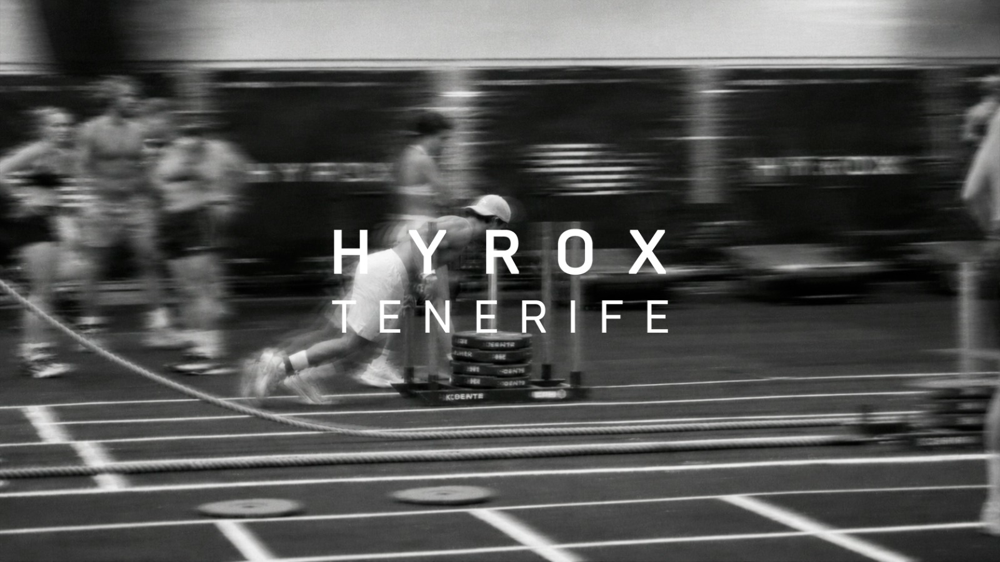

01 / Fotografía deportiva
HYROX Tenerife
Fotografía de competición con energía, detalle y movimiento.
Proyectos seleccionados · Deporte
Fotografía y narrativa audiovisual alrededor del deporte, el entrenamiento y las historias que se construyen dentro y fuera de la competición.

01 / Fotografía deportiva
Fotografía de competición con energía, detalle y movimiento.
02 / Dirección y edición
Un documental construido desde el esfuerzo y el recorrido del atleta.